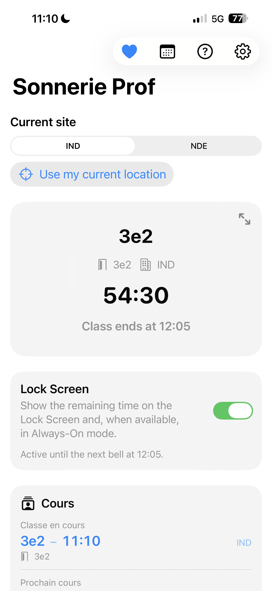
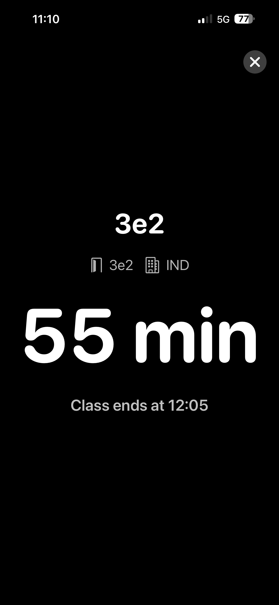
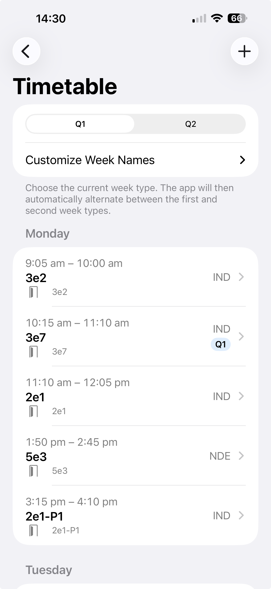
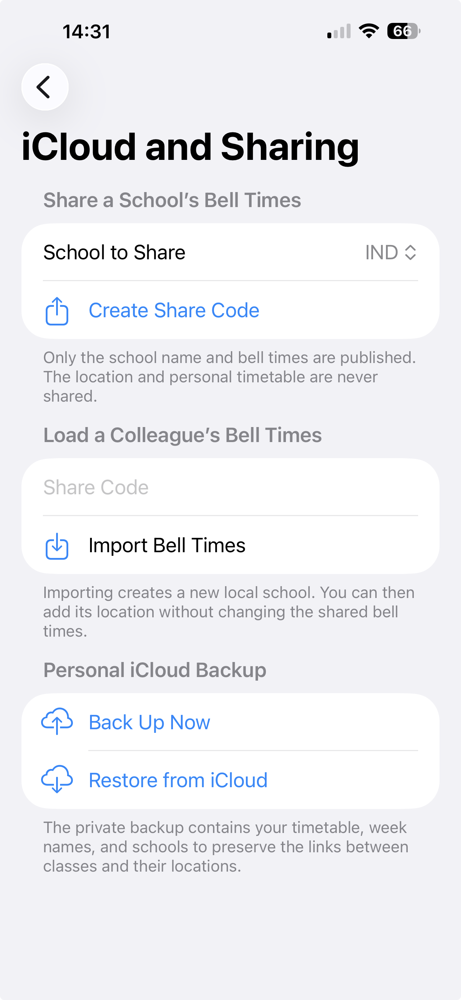

⏱️
Countdown
Use the compact or full-screen view to see the time remaining until the next bell immediately.
Bell schedules, timetable, countdown, Lock Screen and iCloud sharing: everything you need to keep pace with your school day.
From your next class to your complete timetable, useful information stays available at a glance, on iPhone and on the Lock Screen.



Create a code to send a school’s bell schedule to a colleague. You can also back up your complete configuration to your private iCloud space and restore it whenever needed.

Use the compact or full-screen view to see the time remaining until the next bell immediately.
Plan classes, manage alternating weeks and associate every session with the right school site.
Follow the countdown through the widget and Live Activity, including Dynamic Island support.
Configure up to four sites from Monday to Saturday. Nearby-site detection remains optional and local.
Share only a school’s name and bell times. Its location and your personal timetable remain private.
Back up and restore your configuration in your private iCloud database with encrypted content.
Every Sonnerie Prof feature is available for free, with no subscription. If the app is useful to you, you can optionally support its development with an in-app tip. No purchase unlocks features.
View Sonnerie Prof on the App Store